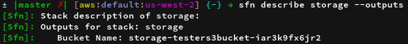
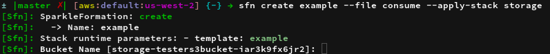

Preamble to the ramble
Lots to talk about
- Want to talk about more than basics
- DSL features shown quickly
- Lets see cool stuff
Tools
- SparkleFormation - DSL library
- sfn - SparkleFormation CLI
- miasma - Cloud model library
> sparkle_formation --composition
- Orchestration API
- AWS CloudFormation
- MS Azure Resource Manager
- Eucalyptus CloudFormation
- Google Cloud Deployment
- OpenStack Heat
- Rackspace Orchestration
- Orchestration Templates
> sparkle_formation --related
Other popular solutions
- Troposphere
- Terraform
- Docker
- Docker
- This new docker thing
SparkleFormation is not a 'CloudFormation wrapper'
SparkleFormation History
- AttributeStruct Library
- Parse and serialize Chef resource
- Support unlimited "sub-resources"
- DSL for describing data
AttributeStruct Library
AttributeStruct.new do
package 'nginx' do
action :install
end
end
{
"package" => {
"nginx" => {
"action" => "install"
}
}
}
SparkleFormation Origin
- Available tools too restrictive
- Explicit resource implementations
- Difficult to customize
- Straight CFN == Too much JSON
- DRY JSON?
-
YAML! - Rainbows and unicorns
Simple JSON template
{
"AWSTemplateFormatVersion": "2010-09-09",
"Description": "My SparkleFormation Stack",
"Resources": {
"MyEc2Instance": {
"Type": "AWS::EC2::Instance",
"Properties": {
"ImageId": "ami-c0e78ba0",
"InstanceType": "m1.small",
"KeyName": "demo-infra"
}
}
},
"Outputs": {
"MyInstanceAddress": {
"Value": {
"Fn::GetAtt": [
"MyEc2Instance",
"PublicIp"
]
}
}
}
}
AttributeStruct template
AttributeStruct.camel_keys = true
AttributeStruct.new do
AWSTemplateFormatVersion '2010-09-09'
description 'My SparkleFormation Stack'
resources.my_ec2_instance do
type 'AWS::EC2::Instance'
properties do
image_id 'ami-c0e78ba0'
instance_type 'm1.small'
key_name 'demo-infra'
end
end
outputs.my_instance_address.value.set!(
'Fn::GetAtt', ['MyEc2Instance', 'PublicIp']
)
end
SparkleFormation template
{
"AWSTemplateFormatVersion": "2010-09-09",
"Description": "My SparkleFormation Stack",
"Resources": {
"MyEc2Instance": {
"Type": "AWS::EC2::Instance",
"Properties": {
"ImageId": "ami-c0e78ba0",
"InstanceType": "m1.small",
"KeyName": "demo-infra"
}
}
},
"Outputs": {
"MyInstanceAddress": {
"Value": {
"Fn::GetAtt": [
"MyEc2Instance",
"PublicIp"
]
}
}
}
}
SparkleFormation.new(:example) do
AWSTemplateFormatVersion '2010-09-09'
description 'My SparkleFormation Stack'
dynamic!(:ec2_instance, :my) do
properties do
image_id 'ami-c0e78ba0'
instance_type 'm1.small'
key_name 'demo-infra'
end
end
outputs.my_instance_address.value attr!(:my_ec2_instance, :public_ip)
end
DSL Features - notation
Dot notation
SparkleFormation.new(:example) do resources.my_ec2_instance.properties.image_id 'ami-21212' end
Block notation
SparkleFormation.new(:example) do
resources do
my_ec2_instance do
properties do
image_id 'ami-21212'
end
end
end
end
DSL Features - Invalid syntax / Composite keys
SparkleFormation.new(:example) do
prefix = '00'
parameters('01_creator') do
type 'String'
end
parameters("#{prefix}_info") do
type 'String'
end
end
SparkleFormation.new(:example) do
prefix = '00'
parameters.set!('01_creator').type 'String'
parameters.set!("#{prefix}_info").type 'String'
end
DSL Features - Arrays
SparkleFormation.new(:example) do
resources.my_ec2_instance.properties do
# With DSL support via Proc
tags array!(
->{
name 'Creator'
value ref!(:stack_creator)
}
)
# Without DSL support
tags [{'Name' => 'Creator', 'Value' => ref!(:stack_creator)}]
end
end
DSL Features - Camels
SparkleFormation.new(:example) do
mappings do
amis do
set!('us-east-1'.disable_camel!, 'ami-888888')
set!('us-west-2'.disable_camel!, 'ami-111111')
end
camel_keys_set!(:auto_disable)
environments do
production 'IS_PROD'
development 'IS_DEV'
end
end
end
DSL Features - Deletion
SparkleFormation.new(:example) do
parameters do
stack_creator.type 'String'
instance_size.type 'String'
end
...
parameters.delete!(:stack_creator)
DSL Features - Raw Data
SparkleFormation.new(:example) do
parameters do
stack_creator.type 'String'
instance_size.type 'String'
end
...
# Hash values at context
parameters.data!.keys.each do |key|
outputs.set!(key).value ref!(key)
end
# Key values at context
parameters.keys!.each do |key|
outputs.set!(key).value ref!(key)
end
DSL Features - Hierarchy Helpers
SparkleFormation.new(:example) do
parameters.key_name.type 'String'
resources.my_instance do
type 'AWS::EC2::Instance'
properties do
key_name ref!(:key_name)
tags array!(
->{
name 'KeyName'
# Parent from current context
value parent!.key_name
# Template root
value root!.resources.my_instance.properties.key_name
}
)
end
end
SparkleFormation Library
- Built on AttributeStruct
- Provides a reusability framework
- Components (single use)
- Dynamics (multiple use)
- Registry (data use)
- Provider specific generation helpers
Template Breakdown - Finding patterns
SparkleFormation.new(:tester) do
AWSTemplateFormatVersion '2010-09-09'
description 'My SparkleFormation Stack'
parameters do
stack_creator.type 'String'
key_name.type 'String'
ami_id.type 'String'
end
dynamic!(:ec2_instance, :my) do
properties do
image_id ref!(:ami_id)
key_name ref!(:key_name)
instance_type 'm1.small'
end
end
outputs.my_instance_address.value attr!(:my_ec2_instance, :public_ip)
end
Framework - Components
Identify single use information
SparkleFormation.component(:base) do
AWSTemplateFormatVersion '2010-09-09'
description 'My SparkleFormation Stack'
parameters do
stack_creator.type 'String'
end
end
Framework - Dynamics
Identify multiple use information
SparkleFormation.dynamic(:node) do |n_name, n_config={}|
parameters do
set!("#{n_name}_key_name").type 'String'
set!("#{n_name}_ami_id").type 'String'
end
instance_resource = dynamic!(:ec2_instance, n_name) do
properties do
image_id ref!("#{n_name}_ami_id".to_sym)
key_name ref!("#{n_name}_key_name".to_sym)
instance_type 'm1.small'
end
end
outputs do
set!("#{n_name}_instance_address").value attr!(
"#{n_name}_ec2_instance".to_sym, :public_ip
)
end
instance_resource
end
Framework - Template
Use new framework items for template
The #load helper method injects components
SparkleFormation.new(:tester).load(:base).overrides do dynamic!(:node, :first) # Now reusable dynamic!(:node, :second) end
Directory Structure
SparkleFormation framework directory structure
. |____sparkleformation | |____tester.rb | |____dynamics | | |____node.rb | |____components | | |____base.rb
SparkleFormation Helper Methods
Generating common data structures
ref!(:stack_creator)
# => {"Ref": "StackCreator"}
attr!(:node, :public_ip)
# => {"Fn::Att": ["Node", "PublicIp"]}
stack_id!
# => {"Ref": "AWS::StackId"}
account_id!
# => {"Ref": "AWS::AccountId"}
Template Compilation
Compilation things
- Top down compilation
- Components loaded first, in order
- Overrides applied last
- Allows customized modifications
Template Modifications
Modify generic data
SparkleFormation.new(:tester).load(:base).overrides do
dynamic!(:node, :first) do
properties.key_name 'my-custom-key'
end
dynamic!(:node, :second)
outputs.delete!(:second_instance_address)
end
Template Inheritance
Slight template adjustments
SparkleFormation.new(:custom_tester, :inherit => :tester) do dynamic!(:s3_bucket, :storage) outputs.storage_bucket.value ref!(storage_bucket.resource_name!) end
Stack Linking
$ sfn create application --apply-stack networking
- Allows manual stack association
- Stack output names matched to stack parameter names
- Requires user interaction on updates

Stack creation with linking

Stack Nesting
Building stacks from stacks
- Native stack resource type
- Stack resources can reference outputs
- Logical grouping of resource collections
- Allows "unit composition"
- Automatic cross stack resource updates
Stack Resource Graphing
Simple frontend endpoint stack
SparkleFormation.new(:endpoint) do
frontend = dynamic!(:load_balancer, :frontend).properties do
listeners array!(
->{
instance_port 80
load_balancer_port 80
instance_protocol 'HTTP'
protocol 'HTTP'
}
)
end
outputs do
endpoint_arn.value ref!(frontend.resource_name!)
endpoint_dns.value attr!(frontend.resource_name!, 'DNSName')
end
end
Endpoint Graph
Resource dependencies (simple)
$ sfn graph --file endpoint --output-type png
Stack Resource Graphing
Worker backend stack
SparkleFormtion.new(:workers) do
parameters.endpoint_arn.type 'String'
launch = dynamic!(:launch_configuration, :workers).properties do
image_id 'ami-0000'
instance_type 't2.micro'
key_name 'default'
user_data base64!("#!/bin/sh\necho 'configure stuff'\n")
end
dynamic!(:auto_scaling_group, :workers).properties do
availability_zones azs!
launch_configuration_name ref!(launch.resource_name!)
min_size 1
max_size 3
load_balancer_names [ref!(:endpoint_arn)]
end
end
Workers Graph
Resource dependencies (still simple)
$ sfn graph --file workers --output-type png
Composing stacks
Create application stack
- Nest endpoint to provide ELB
- Nest workers after endpoint
- Automatic stack linking
SparkleFormation.new(:application) do nest!(:endpoint) nest!(:workers) end
Application Graph
Resource dependencies (cross stack)
$ sfn graph --file application --output-type png
Nested Stack Linking
{
"Resources": {
"Endpoint": {
"Type": "AWS::CloudFormation::Stack",
"Properties": {
"Stack": {
"Resources": {
"FrontendLoadBalancer": {
"Type": "AWS::ElasticLoadBalancing::LoadBalancer",
"Properties": {
"Listeners": [
{
"InstancePort": 80,
"LoadBalancerPort": 80,
"InstanceProtocol": "HTTP",
"Protocol": "HTTP"
}
]
}
}
},
"Outputs": {
"EndpointArn": {
"Value": {
"Ref": "FrontendLoadBalancer"
}
},
"EndpointDns": {
"Value": {
"Fn::GetAtt": [
"FrontendLoadBalancer",
"DNSName"
]
}
}
}
},
"TemplateURL": "http://example.com/bucket/nested-stack-templates/application_Endpoint.json"
}
},
"Workers": {
"Type": "AWS::CloudFormation::Stack",
"Properties": {
"Parameters": {
"EndpointArn": {
"Fn::GetAtt": [
"Endpoint",
"Outputs.EndpointArn"
]
}
},
"Stack": {
"Parameters": {
"EndpointArn": {
"Type": "String"
}
},
"Resources": {
"WorkersLaunchConfiguration": {
"Type": "AWS::AutoScaling::LaunchConfiguration",
"Properties": {
"ImageId": "ami-0000",
"InstanceType": "t2.micro",
"KeyName": "default",
"UserData": {
"Fn::Base64": "#!/bin/sh\necho 'configure stuff'\n"
}
}
},
"WorkersAutoScalingGroup": {
"Type": "AWS::AutoScaling::AutoScalingGroup",
"Properties": {
"AvailabilityZones": {
"Fn::GetAZs": ""
},
"LaunchConfigurationName": {
"Ref": "WorkersLaunchConfiguration"
},
"MinSize": 1,
"MaxSize": 3,
"LoadBalancerNames": [
{
"Ref": "EndpointArn"
}
]
}
}
}
},
"TemplateURL": "http://example.com/bucket/nested-stack-templates/application_Workers.json"
}
}
}
}
Nested Stack Linking
Important parts
{
"Resources": {
"Endpoint": {
"Type": "AWS::CloudFormation::Stack",
...
"Workers": {
"Type": "AWS::CloudFormation::Stack",
"Properties": {
"Parameters": {
"EndpointArn": {
"Fn::GetAtt": [
"Endpoint",
"Outputs.EndpointArn"
]
}
},
...
AWS CloudFormation
The best rodeo, but not the only rodeo
Providers with Orchestration
Public and private clouds
- Azure - Azure Resource Manager
- Eucalyptus - CloudFormation
- Google - Cloud Deployment Manager
- OpenStack - HEAT (Rackspace)
Horrible little snowflakes
SparkleFormation Templates
Consistent template structure
Common Items
- Parameters
- Resources
- Outputs
Common Type: Hash
Provider identification
SparkleFormation.new(:example, :provider => :azure) do ...
APIs following common structure
Common structure and typing
- AWS - CloudFormation
- Eucalyptus - CloudFormation
- OpenStack - HEAT
- Rackspace - HEAT
Azure Resource Manager
{
"resources": [
{
"type": "Microsoft.Storage/storageAccounts",
"apiVersion": "2016-01-01",
"location": "[resourceGroup().location]",
"name": "[parameters('someName')]"
},
{
"type": "Microsoft.Storage/storageAccounts",
"dependsOn": [
"[parameters('someName')]"
],
"apiVersion": "2016-01-01",
"location": "[resourceGroup().location]",
"name": "concatDependsOnStorageAccounts"
},
{
"type": "Microsoft.Storage/storageAccounts",
"dependsOn": [
"[parameters('someName')]"
],
"apiVersion": "2016-01-01",
"location": "[resourceGroup().location]",
"name": "referenceNameStorageAccounts"
}
]
}
Orchestration API in Azure cloud
Pros:
- Variables
- Resource level versioning
Cons:
- Intrinsic functions are strings
- Resources an Array
SparkleFormation in ARM
Template
SparkleFormation.new(:example, :provider => :azure) do
resources.my_resource do
type 'Custom/resourceTypes'
end
end
Final JSON
{
"resources": [
{
"type": "Custom/resourceTypes",
"name": "myResource"
}
]
}
Internal data structure
{
"resources" => {
"myResource" => {
"type" => "Custom/resourceTypes"
}
}
}
Google Cloud Deployment Manager
{
"imports": [
{
"name": "google.jinja",
"content": {
"resources": [
{
"type": "storage.v1.bucket",
"name": "my-bucket-kjkmaatdcn"
}
],
"outputs": [
{
"value": "{{ properties[\"creator\"] }}",
"name": "owner"
}
]
}
},
{
"name": "google.jinja.schema",
"content": {
"info": {
"title": "google.jinja template",
"description": "google.jinja template schema"
},
"properties": {
"creator": {
"type": "string"
}
}
}
}
],
"config": {
"content": {
"resources": [
{
"name": "google",
"type": "google.jinja"
}
],
"imports": [
"google.jinja",
"google.jinja.schema"
]
}
}
}
Orchestration API in Google cloud
Pros:
- Supports templates
Cons:
- Intrinsic functions are strings (Jinja)
- Resources an Array
- Outputs an Array
- Jinja support only within subfiles
- Parameters defined within subfiles
GCDM SparkleFormation Template
SparkleFormation.new(:example, :provider => :google) do parameters.creator.type 'string' dynamic!(:v1_bucket, :my_bucket, :sparkle_unique) outputs.owner.value property!(:creator) end
{
"imports": [
{
"name": "google.jinja",
"content": {
"resources": [
{
"type": "storage.v1.bucket",
"name": "my-bucket-kjkmaatdcn"
}
],
"outputs": [
{
"value": "{{ properties[\"creator\"] }}",
"name": "owner"
}
]
}
},
{
"name": "google.jinja.schema",
"content": {
"info": {
"title": "google.jinja template",
"description": "google.jinja template schema"
},
"properties": {
"creator": {
"type": "string"
}
}
}
}
],
"config": {
"content": {
"resources": [
{
"name": "google",
"type": "google.jinja"
}
],
"imports": [
"google.jinja",
"google.jinja.schema"
]
}
}
}
String evaluation - because it's "easier"
SparkleFormation.new(:test, :provider => :azure) do
test concat!('fubar', add!(1, 2))
end
Example output
{
"test": "[concat('fubar', add(1, 2))]"
}
Sharing is caring
SparklePacks and distribution
SparkleFormation SparklePacks
Means to distribute SparkleFormation code
- Access to building blocks
- Access to templates
- Multiple enabled at once
- Layering
Pack Layering Example
Root pack node dynamic
SparkleFormation.dynamic(:node) do |name|
resources.set!("#{name}_instance").type 'AWS::EC2::Instance'
end
Security pack node dynamic
SparkleFormation.dynamic(:node, :layering => :merge) do |name|
resources.set!("#{name}_security").type 'AWS::EC2::SecurityGroup'
end
Template usage
SparkleFormation.new(:example) do dynamic!(:node, :test) end
Pack Layering Result
Template generated JSON
{
"Resources": {
"TestInstance": {
"Type": "AWS::EC2::Instance"
},
"TestSecurity": {
"Type": "AWS::EC2::SecurityGroup"
}
}
}
Callbacks
Add custom functionality
- Stack policy generation
- AWS MFA token generation
- Serverspec integration
resources.my_ec2_instance do
type 'AWS::EC2::Instance'
proeprties do
...
end
serverspec.spec_patterns [File.join(Dir.pwd, 'specs/compute/*_spec.rb')]
end
Other Features
More things in the SparkleFormation wheelhouse
- Template Linting
- Template Diffs
- Stack planning (AWS only currently)
AWS Related - jackal-cfn
- CloudFormation Custom Resources
- AmiRegister - Create AMIs
- OrchestrationUnit - Execute unit of code
- JackalStacks - Build stacks
Resources
Where to find SparkleFormation info:
- GitHub: https://github.com/sparkleformation
- IRC: Freenode @ #sparkleformation
Thank you!